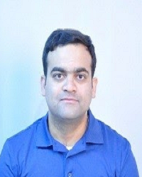

Abul Basar
Excellent Band Trainer | 14 years of Experience | 5 years of Training Experience | Big Data, Data Science
Bangalore, India
Top
9%
Network SSI Rank
Top
3%
Industry SSI Rank
About
Experienced and dynamic corporate trainer with excellent communication, management skills. Able to design and implement a variety of training programs for multiple purposes. Comfortable working in any industry with groups of all sizes.More than decade years of consummate technology work experience in the role of development, solution architecture, and technical architecture in the space of customer relationship management, big data, and advanced analytics Delivered over 80 corporate training assignments and taught over 1500 students in the field o machine learning, Data Science, and bigdata.
Experience
- General Electric (GE), IN 2014 - 2015 Technical Architect Unified Sales, Risk, and operations 29 European businesses of GE Capital on to a single platform. This Project speeds up the handoffs between business functions of deal processing, gives faster pan European reporting in the strict European regulatory environment.
- LinkedIn Corp, IN 2012 - 2014 Technical Solution Architect Built a product to make Sales more productive by giving predictive e analytics by leveraging data on user behavior on business.linkedin.com. The product mines weblogs to general and rank hot leads and follow through in the sales cycle.
- Tata Consultancy Services, IN 2004 - 2012 Consultant - Technology
Education
- Bengal Engineering and Science University - Shibpur, India Bachelor of Engineering - Bachelor of Engineering from Electronics and Telecommunication 2000 - 2004
Certification
- Sequence Models by Coursera 2018
- DataStax Certified Professional on Apache Cassandra™ by DataStax 2017
Projects
- Unified Sales, Risk, and operations 2014 Unified Sales, Risk, and operations 29 European businesses of GE Capital on to a single platform. This Project speeds up the handoffs between business functions of deal processing, gives faster pan European reporting in the strict European regulatory environment.
- Predictive e-analytics 2012 Built a product to make Sales more productive by giving predictive e analytics by leveraging data on user behavior on business.linkedin.com. The product mines weblogs to general and rank hot leads and follow through in the sales cycle.
Awards
- Second place in Machine Learning Hackathon Issuer: "10000 Startups" of NASSCOM, IBM Bluemix May 2015 Our team "healthcamp" created a recommendation engine to control infant mortality using a machine learning algorithm on top of data available in data.gov.in. The solution was hosted on IBM Bluemix which was one of the sponsors of the event.
Skills
- Big Data: Cloudera, Hortonworks, MapR, EMR Hadoop
- Data Science: Applied Machine Learning, Data Science, Artificial Intelligence
- NoSQL, distributed databases: Cassandra, HBase
- Streaming - Kafka, Storm, Spark ANTLR, Spring
- Cloud platforms: AWS, Salesforce, GCP
Certification
- Sequence Models by Coursera2018
- DataStax Certified Professional on Apache Cassandra™ by DataStax2017
Testimonials
- The instructor was lively, energetic + even humorous. Kept all trainees engaged with difficult examples that encouraged people to think outside the box and be pushed out of comfort zone Bhavin Senior Manager Software Hopoye Technologies, IN